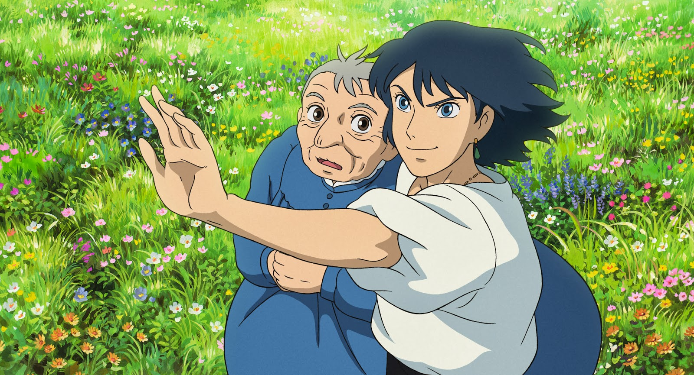
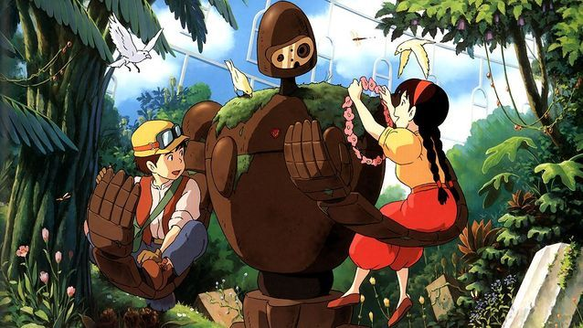

Le château ambulant

 Présentation :
Présentation :
Le Château ambulant est un film d'animation (dessin animé) japonais réalisé par Hayao Miyazaki en 2004. Il s'agit d'une adaptation du roman de Diana Wynne Jones, Le Château de Hurle. Il est récompensé la même année par le prix du public et nomination au prix du meilleur film, lors du Festival international du film de Catalogne.
Synopsis :
Sophie, une orpheline de 18 ans, qui travaille dur dans la boutique de chapelier que lui a laissée son père. Un jour, en ville, elle croise Hauru, un magicien très séduisant, mais faible de caractère. Une sorcière, se méprenant sur leurs sentiments, change Sophie en une vieille femme de 90 ans.
Mon voisin Totoro

 Présentation :
Présentation :
Mon voisin Totoro est un film d'animation japonais réalisé par Hayao Miyazaki et produit par le studio Ghibli, sorti au Japon le 16 avril 1988. Il est récompensé la même année par le prix Noburō Ōfuji et le Prix Mainichi du meilleur film.
Synopsis :
Deux petites filles, Mei, 4 ans, et Satsuki, 10 ans, s'installent dans une grande maison à la campagne avec leur père pour se rapprocher de l'hôpital où séjourne leur mère. Elles découvrent la nature tout autour de la maison et, surtout, l'existence de créatures merveilleuses, les Totoros, avec qui elles deviennent très amies.
Le château dans le ciel

 Présentation :
Présentation :
Le Château dans le ciel ou Laputa, le château dans le ciel est un film d'animation japonais du studio Ghibli, réalisé par Hayao Miyazaki en 1986. En 1987 le Prix Mainichi Noburō Ōfuji 1986 est décerné à Hayao Miyazaki, son équipe et la société Tokuma Shoten.
Synopsis :
Enlevée par des pirates de l'air, la jeune Sheeta parvient à s'échapper en sautant d'un dirigeable où elle était prisonnière. Sauvée de justesse par Pazu, jeune orphelin travaillant pour une cité minière, elle révèle à ce dernier être la descendante des souverains de Laputa, une île flottante dans les cieux.
Le voyage de Chihiro

 Présentation :
Présentation :
Le Voyage de Chihiro est un film d'animation japonais écrit et réalisé par Hayao Miyazaki et produit par le studio Ghibli, sorti en 2001.Le film reçoit plusieurs distinctions prestigieuses, dont l'Ours d'or du meilleur film à Berlin, le prix de l'Académie japonaise du meilleur film et le prix Mainichi du meilleur film en 2002, ainsi que l'Oscar du meilleur film d'animation en 2003.
Synopsis :
La petite Chihiro accompagne ses parents dans une promenade sylvestre qui doit les conduire vers leur nouvelle maison en banlieue. Alors qu'elle prend un raccourci à travers un tunnel peu emprunté, la petite famille se retrouve soudain en territoire inconnu. Le temps de retrouver leur chemin, ils font une halte dans un gigantesque restaurant en plein air, totalement déserté.